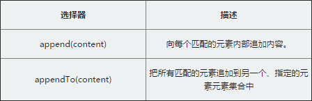

动态创建的元素是不够的，它只是临时存放在内存中，最终我们需要放到页面文档并呈现出来。那么问题来了，怎么放到文档上？
这里就涉及到一个位置关系，常见的就是把这个新创建的元素，当作页面某一个元素的子元素放到其内部。针对这样的处理，jQuery就定义2个操作的方法

append：这个操作与对指定的元素执行原生的appendChild方法，将它们添加到文档中的情况类似。
appendTo：实际上，使用这个方法是颠倒了常规的$(A).append(B)的操作，即不是把B追加到A中，而是把A追加到B中。
简单的总结就是：
.append()和.appendTo()两种方法功能相同，主要的不同是语法——内容和目标的位置不同
append()前面是要选择的对象，后面是要在对象内插入的元素内容
appendTo()前面是要插入的元素内容，而后面是要选择的对象
append()用法：
$("#bt1").on('click', function() {
//.append(), 选择表达式在函数的前面，
//参数是将要插入的内容。
$(".content").append('《div class="append">通过append方法添加的元素《/div>')
})
appendTo()用法：
$("#bt2").on('click', function() {
//.appendTo()刚好相反，内容在方法前面，
//无论是一个选择器表达式 或创建作为标记上的标记
//它都将被插入到目标容器的末尾。
$('《div class="appendTo">通过appendTo方法添加的元素《/div>').appendTo($(".content"))
})